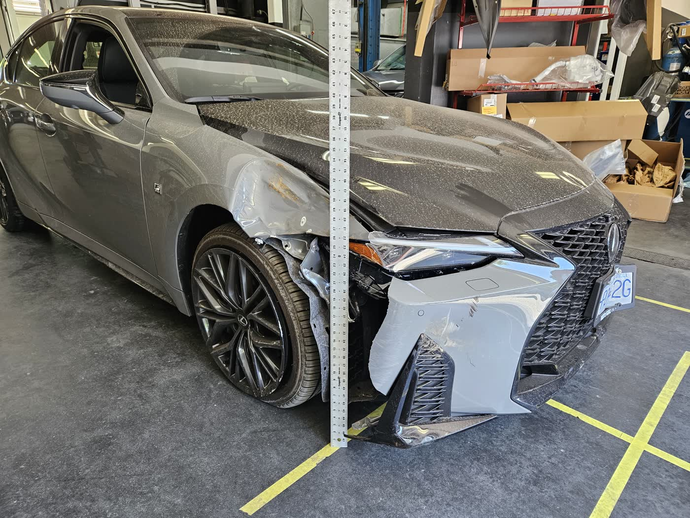
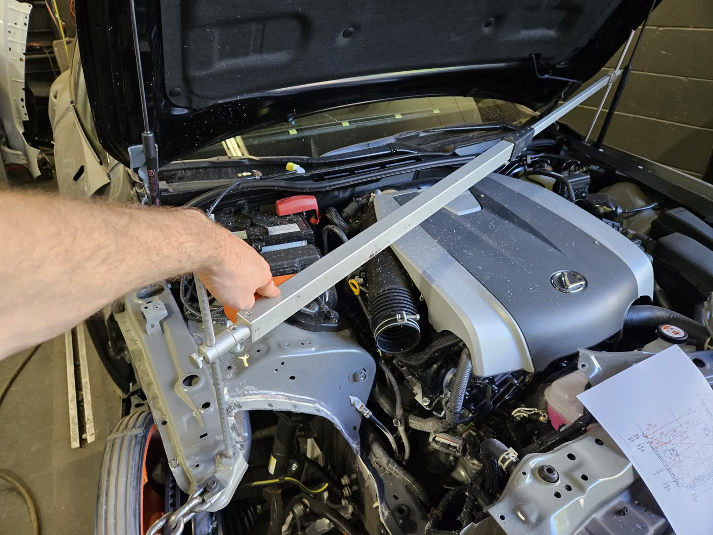
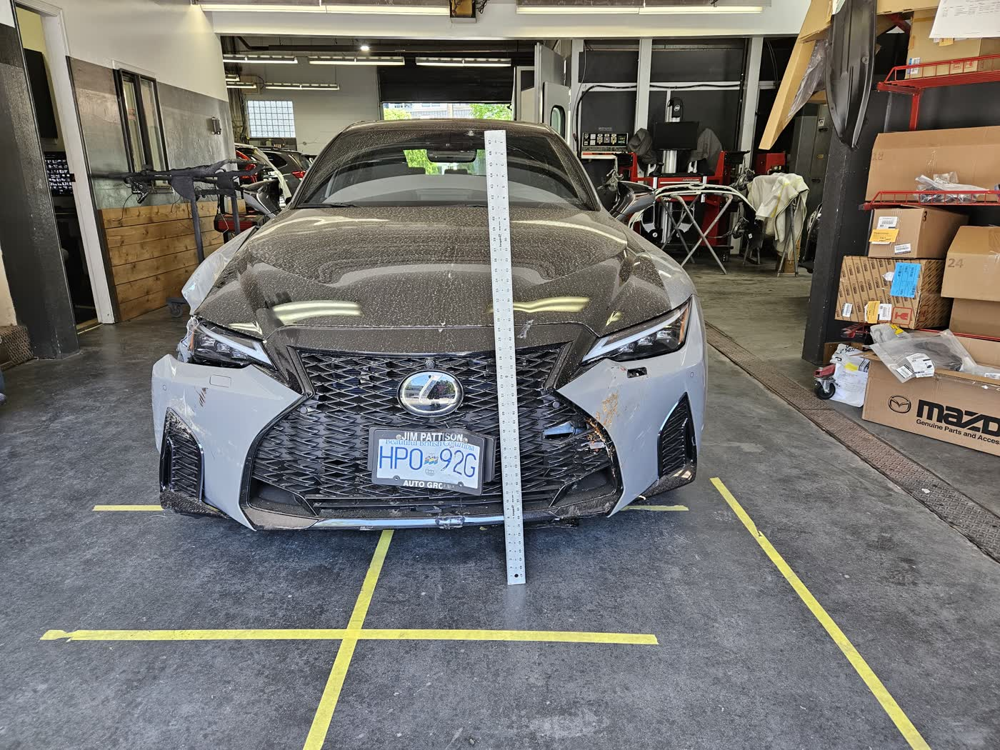
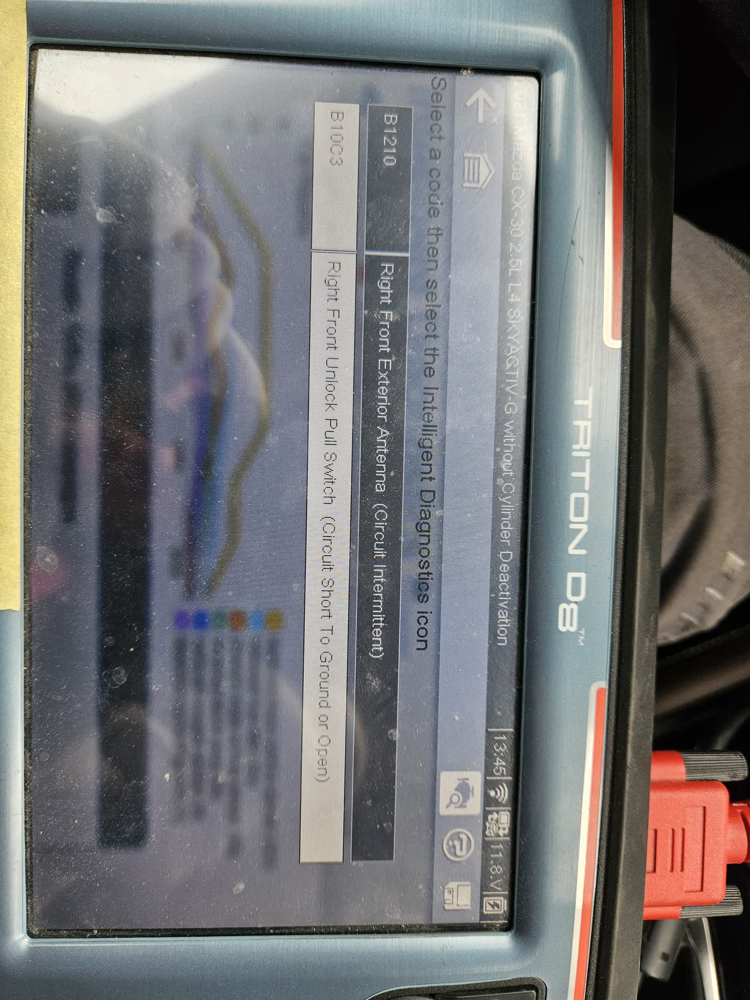
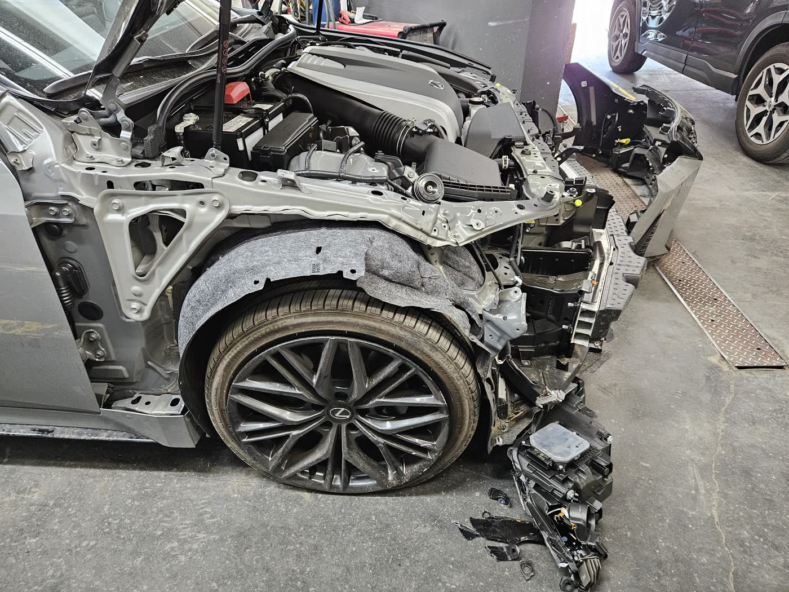
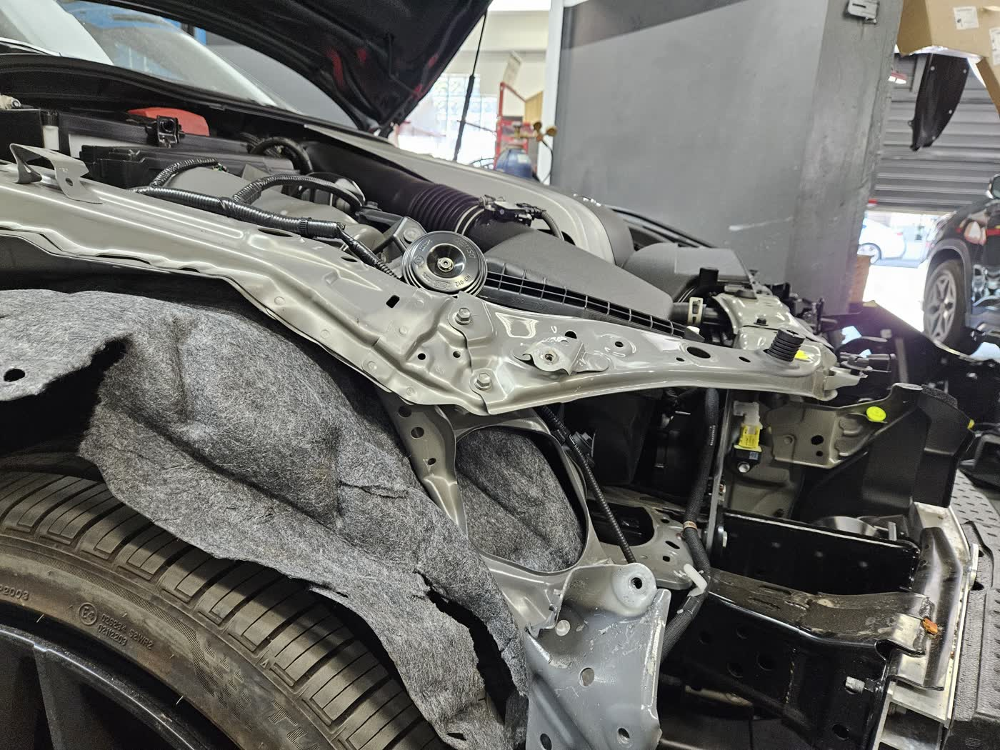

Rstruct CRM
Opportunities, projects, Drive documents, Gmail and Calendar sync, accounting and payroll. On AWS, deployed from GitHub, backed up nightly to three places.
Technical Product Manager · MailerLite application
Nine years running a collision repair shop, then this year building the internal tools that run an engineering firm with Claude Code. I want to do that work full time, on a platform other teams depend on.
2016 – 2025 · General Manager
A collision repair shop I ran end to end for nine years: estimating and production, the ICBC relationship, hiring and HR, the commercial lease, and the numbers. The team grew from 6 to 12 administrators and certified technicians, and I came up through the trade first: detailer, then certified collision, refinishing and glass technician, then estimator and production manager.
With a team that grew from 6 to 12 administrators and certified technicians.
Annual sales from $800K to $2.9M over those nine years.
Where the shop placed among BC collision facilities on ICBC's KPI metrics.
From $500 to $60,000 each, averaging about $4,000.
Aug 2025 – Feb 2026 · Project Coordinator
Building-envelope and building-science projects for strata corporations, run end to end. I wrote the scopes, budgets and schedules across concurrent projects, was the primary client contact, presented technical findings to strata councils, and sent leadership a weekly risk and roadblock report. It's where I learned how engineering firms actually deliver, and what their internal tools were missing.
Coordinating building-envelope projects from scoping through close-out.
A risk and roadblock report for every project, every week.
Presented scopes, findings and budgets directly to strata councils.
Mar 2026 – present · Project Manager, Depreciation Reports
Hired to start the depreciation-report division from zero: the service offering, pricing model and proposals, site-inspection protocols, component inventories and 30-year funding forecasts under the BC Strata Property Act. Then I built the tools that run it with Claude Code: the CRM, the quote pipeline, the report builder, and the accounting that sits underneath. Every report is reviewed by a P.Eng before it goes out.
Just under $100K for the new division, won through a targeted email campaign and LinkedIn prospecting.
In the report builder's database behind every inventory and 30-year forecast.
When the quote pipeline moved into the CRM, tested on a copy of the folder tree first.
The CRM's database is copied to three separate places every night at 2 AM, each copy integrity-checked.
62 seconds
Nine years on the shop floor, the tools I built in 2026, and one hockey goal. Sound on.
I start with what happens if we don't ship each one: who is blocked, who is losing money, and who is only mildly inconvenienced. Something that unblocks other teams or stops a real loss usually beats something that is nice to have.
Next I look at cost and risk. If two options are close, I take the one we can ship small, measure, and roll back if it's wrong.
A recent example: when I moved Rstruct's quote-to-project pipeline off Google Apps Script and into our CRM, the biggest risk was losing client files. So we built and tested against a copy of the Drive folder tree first and kept the old scripts running until we were ready to switch. The merge ran 865 file operations with zero failures.
Whatever I choose, I write down why and tell the people whose feature is waiting.
Not in a dedicated trust & safety or fraud role, so I won't pretend otherwise. The closest I've come is protecting client and financial data in the tools I run at Rstruct.
Before our CRM went online I had it audited, and we fixed SQL injection, mass-assignment and email-escaping holes. I turned off public sign-up, switched to invite-only accounts with one-time set-password links, and restricted access by tab, enforced on the server, so staff can't reach payroll or SIN data. API keys can be entered but never read back. Backups run nightly to three separate places.
I've also caught the quieter problems: our report generator was reachable online with no login, one client's report data was leaking into another's, and internal notes were showing up on a client quote. Each one was fixed at the root.
The abuse side of email sending is new to me, and it's one of the parts of this role I'd most like to learn.
Claude Code is my main tool. I've used it to build and run Rstruct's CRM (hosted on AWS, deployed from GitHub), our quote pipeline in Google Apps Script, a depreciation report builder, and a daily-log app for the service advisors at a VW dealership. I don't write the code by hand. I write the requirements, make the product calls, and test the results.
The most useful thing I've learned is to give it rules the way you'd give a team acceptance criteria. After a change looked done but wasn't visible to users, I made it a rule that nothing is done until the result is checked where the user sees it. I also defined what a test means for our pipeline: a baseline snapshot, expected results written down first, then a diff.
I connect it to real systems through MCP: Chrome, Google Drive, Gmail, and MailerLite's own connector. I've used multi-agent runs for research, including 112 agents on Canadian tax and accounting rules for our payroll module. Inside our products, AI reads receipts and bank statements in the CRM and turns pasted dealership screens into structured jobs. I also use ChatGPT and Gemini.
Full disclosure: I built this page the same way. Claude drove the editor, cut the reel with ffmpeg, and helped me draft from my own history, and I made the calls.
Not with a dedicated platform team inside a large company. At Rstruct I've been the product owner for the internal platform the rest of the firm runs on.
That's the CRM (opportunities, projects, documents in Google Drive, Gmail and Calendar sync, accounting and payroll) plus the tools plugged into it. Our engineer Melvin built the report generator and the financial model. We split each into its own private repo so it could be maintained independently, and wrote a contract document that defines how the CRM embeds them: hosting, the embed API, storage, and what triggers a sync. Each piece can change without breaking the others.
I'm involved end to end: I set the requirements, make the trade-offs, test, and own the infrastructure decisions, like deploying from GitHub with a database backup before every update. I haven't worked alongside an SRE team yet, and I'd welcome it.
I haven't done formal user research inside a product org. My habit is to start from what people already use.
When I built the daily-log app for the service advisors at the VW dealership where I worked, I started from their actual Excel log, screenshots of the dealership's system, and their process spreadsheets. Then we iterated in quick rounds of screenshots and fixes until it matched how the service desk really works.
I also talk to clients directly. At Strata Engineering I was the main client contact and presented to strata councils. At Rstruct I grew our depreciation-report work through an email campaign and LinkedIn outreach, and the quote-request email asks for exactly what we need to price a job: strata number, address and number of units.
To make sure I'm building for the right audience, I ask who will use it every day, and I get it in front of them as early as I can.
Motorcycles, hockey and cooking. I've ridden across North America on a motorcycle, I play ASHL league hockey, and I'm slowly working through the Red Seal carpentry textbooks for fun.
The goal in the reel above is mine. Watch it with the sound on.






Opportunities, projects, Drive documents, Gmail and Calendar sync, accounting and payroll. On AWS, deployed from GitHub, backed up nightly to three places.
Parses quote PDFs, builds the Drive folder tree, keeps the status sheet in sync and archives completed jobs by invoice date. Migrated into the CRM with 865 ops, zero failures.
Depreciation reports for BC strata corporations from a 407-component database, with funding scenarios. Every claim cited; reviewed by a P.Eng.
Built for the OpenRoad VW service desk from their real Excel log and screens. AI intake turns pasted ERP text into structured jobs.
All of it with Claude Code and MCP. I set the requirements, make the calls and test the result.
Thanks for reading
If this sounds like someone your platform team could use, I'd love to hear from you.